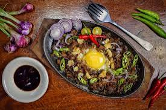
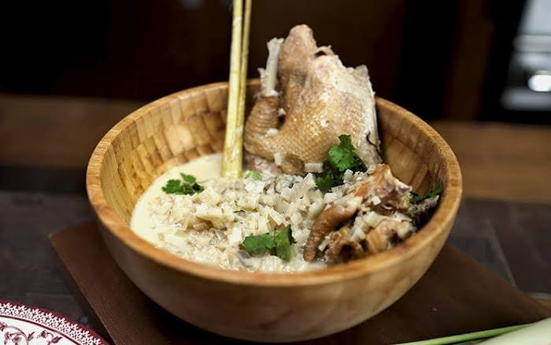
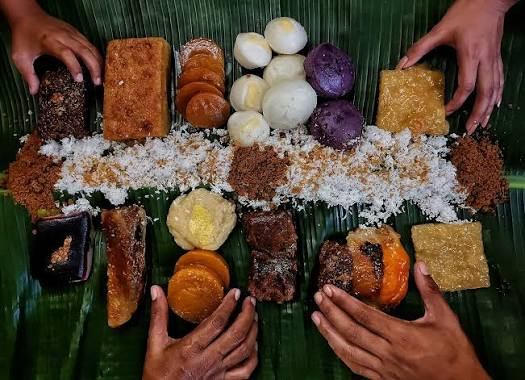

Local Tarlac Dishes
These signature dishes are uniquely Tarlac – crafted from generations of local tradition, using ingredients grown in the province’s rich soil and adapted to the tastes of its people. Many of these foods are tied to community celebrations, family gatherings, and the daily lives of Tarlac residents.
Featured Local Dishes
-

Tarlac-Style Sisig -

Inubarang Manok -

Tarlac Kakanin Mix
About These Local Specialties
- Tarlac-Style Sisig: Different from Pampanga’s version, this sisig uses pork jowl and liver marinated in local vinegar mixed with calamansi and native soy sauce before grilling. It’s served with a side of pickled green mangoes and a dash of cane vinegar for extra zing – a favorite at town fiestas and backyard gatherings.
- Inubarang Manok: A hearty chicken stew made with young bamboo shoots (ubas), wild ginger, and fresh turmeric from Tarlac’s upland areas. The dish has a distinct earthy flavor and vibrant yellow color, often prepared for special occasions like baptisms and weddings in rural communities.
- Tarlac Kakanin Assortment: Includes unique rice cakes like suman sa ibos wrapped in palm leaves from the Zambales-Tarlac border, kalamay hati made with local brown sugar and coconut milk, and biko sa latik topped with crispy coconut curds – sold by street vendors and at public markets across the province.
- Adobo sa Gata ng Tarlac: A local twist on classic adobo, where chicken or pork is cooked in coconut milk (from Tarlac’s coconut farms) along with soy sauce, garlic, and bay leaves. The result is a creamy, savory dish that pairs perfectly with steamed rice.
Where to Find These Dishes
- Aling Miling’s Eatery (Tarlac City): Known for serving authentic Tarlac-style sisig for over 40 years – locals say it’s the best in the province.
- Upland Home Kitchen (San Jose): A small family-run restaurant that specializes in inubarang manok and other rural Tarlac dishes, using ingredients from their own farm.
- Tarlac City Public Market: Head to the “kakanin corner” for fresh rice cakes made daily by local vendors – perfect for take-home snacks.
- Barrio Fiesta Stalls (Various Towns): During fiestas, look for community stalls serving traditional local dishes prepared using age-old recipes.
Cultural Significance of Local Tarlac Food
- Community Bonding: Dishes like inubarang manok are often prepared in large batches to feed neighbors and guests during celebrations, strengthening ties within the community.
- Connection to Land: Many ingredients – from bamboo shoots to coconut milk – are sourced directly from local farms and forests, reflecting Tarlac’s agricultural heritage.
- Generational Traditions: Recipes for local kakanin and sisig are passed down from grandmothers to grandchildren, keeping culinary traditions alive for future generations.